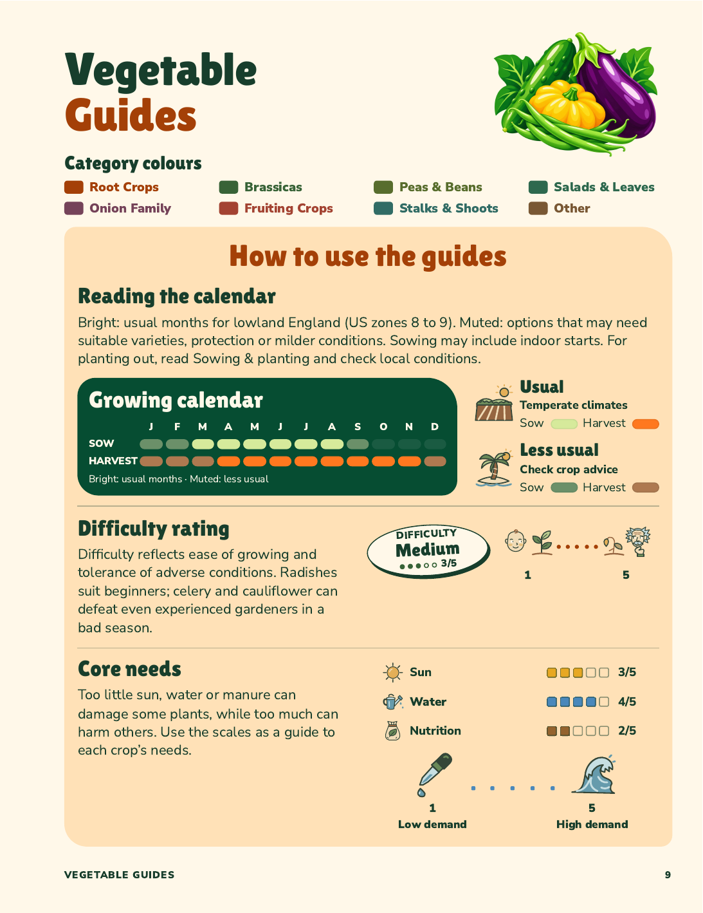
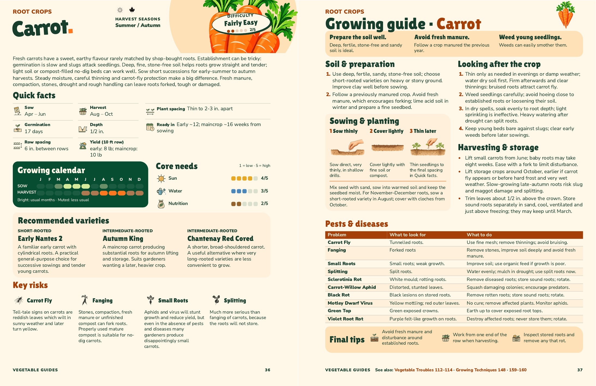
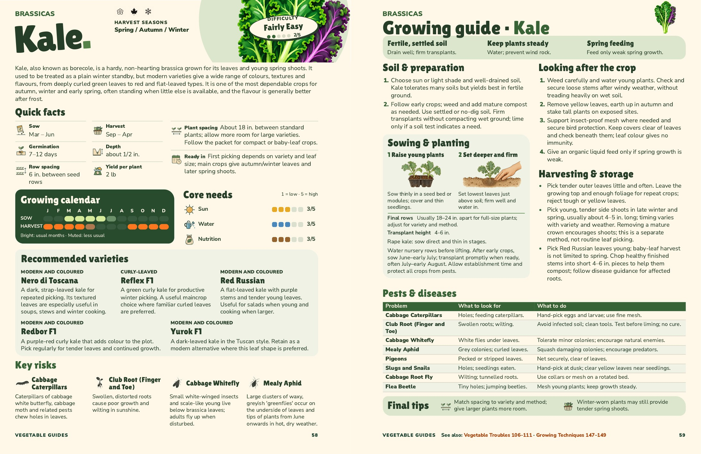

Category names and colour key
Category names on the four guide pages are approved. The how-to colour key is rejected and retained here only as a reference. The main book is unchanged. The eight existing category colours are retained; larger category names repeat on both guide pages.
Open the five-page PDF
How to use the guides · page 9
A smaller title and decorative illustration make space for the colour key. All existing explanations and diagrams remain at their previous reading size.

Carrot · pages 36–37

Kale · pages 58–59
